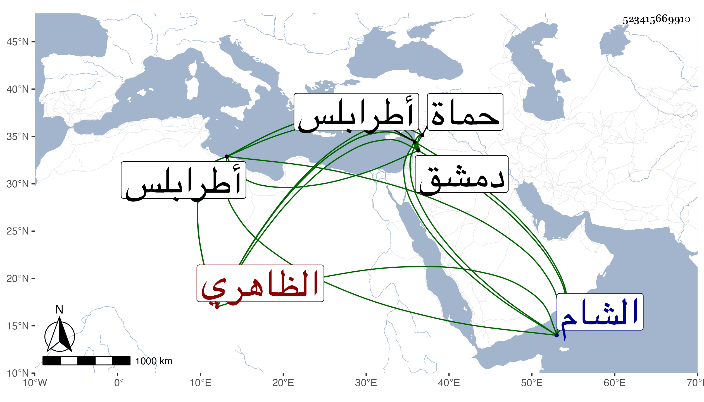

0902Sakhawi.DawLamic.ITO20230111-ara1.EIS1600.523415669910
Biography ID: 523415669910
1321
يونس الظاهري برقوق ويعرف ببلطا وبالرماح . كان من أعيان خاصكية أستاذه ثم رقاه لنيابة حماة ثم طرابلس ثم كان بعده ممن وافق تنما الحسني نائب الشام ، وآل أمره إلى القبض عليه وسجنه بقلعة دمشق ثم قتل بمحبسه في يوم الخميس رابع رمضان سنة اثنتين وكان جركسيا رديء الأصل شابا مليحا شجاعا مقداما ظالما غشوما قتل جماعة من طرابلس بل لما عصى مع تنم قتل قاضيها الحنفي والمالكي وخطيبها بغير جرم فلم يلبث أن قتله الله . وبلطا بفتح الموحدة ولام ساكنة مهملة هو باللغة التركية اسم للمسحة الآلة التي يحفر بها .
